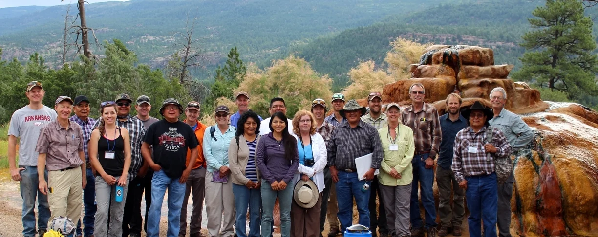

The Global Springs Alliance brings together the people, knowledge, capacity, influence, and resources needed to protect, restore, and sustainably steward springs around the world.
Great work is happening. Too often, it happens alone.
Around the world, communities, scientists, conservation organizations, governments, and practitioners are working to understand and protect springs.
But much of that work remains fragmented. Knowledge does not always reach practitioners. Successful approaches may stay confined to one region. Local organizations may lack access to technical support or funding. And springs remain overlooked in many conservation, freshwater, groundwater, climate, and development agendas.
The Alliance exists to connect those efforts — not replace them. By bringing people and organizations together, we can share what works, build stronger partnerships, and move faster.

Connect. Enable. Transform.
Three complementary functions turn collaboration into lasting conservation change.
CONNECT
Bring people, organizations, and partnerships together around shared conservation challenges and opportunities.
ENABLE
Strengthen access to knowledge, skills, tools, resources, technical support, and capacity.
TRANSFORM
Scale effective conservation action and influence policy, practice, investment, and public awareness.